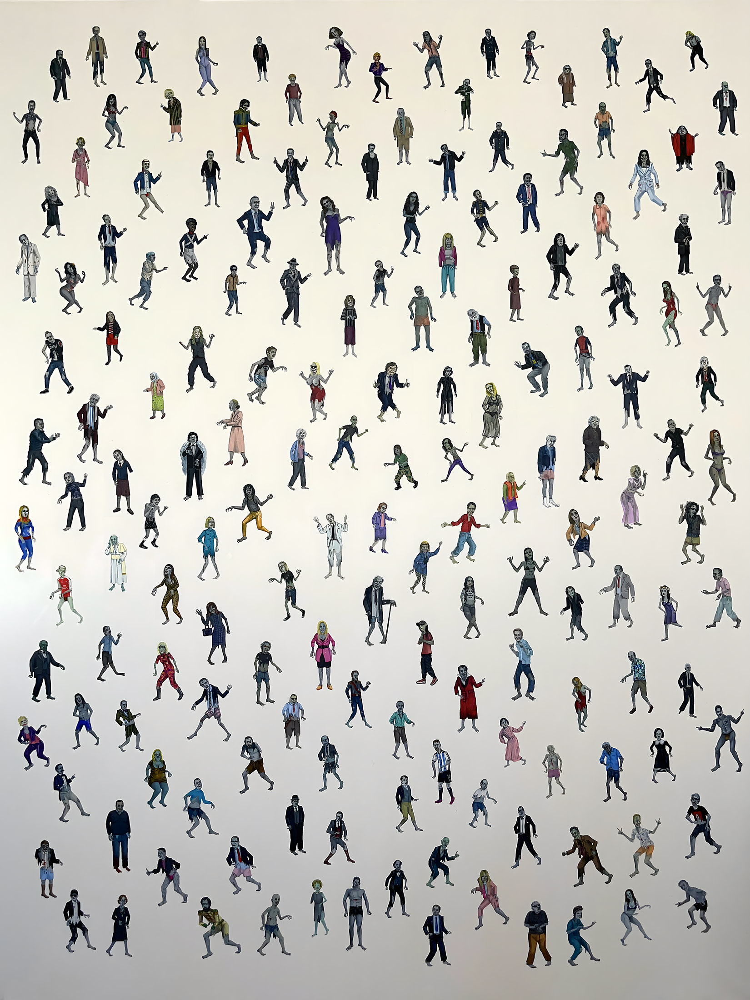
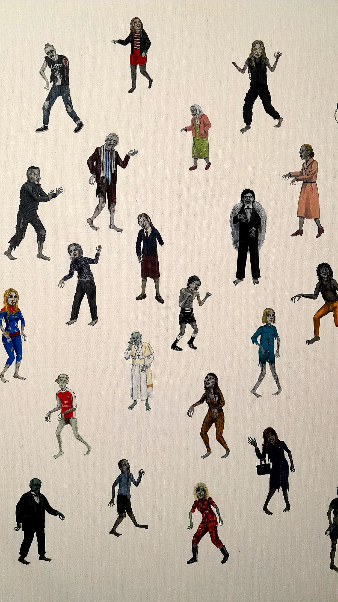
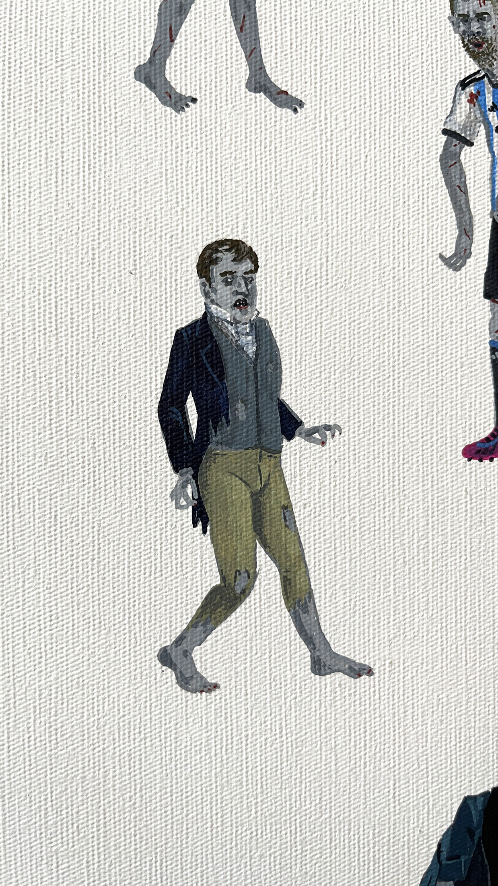
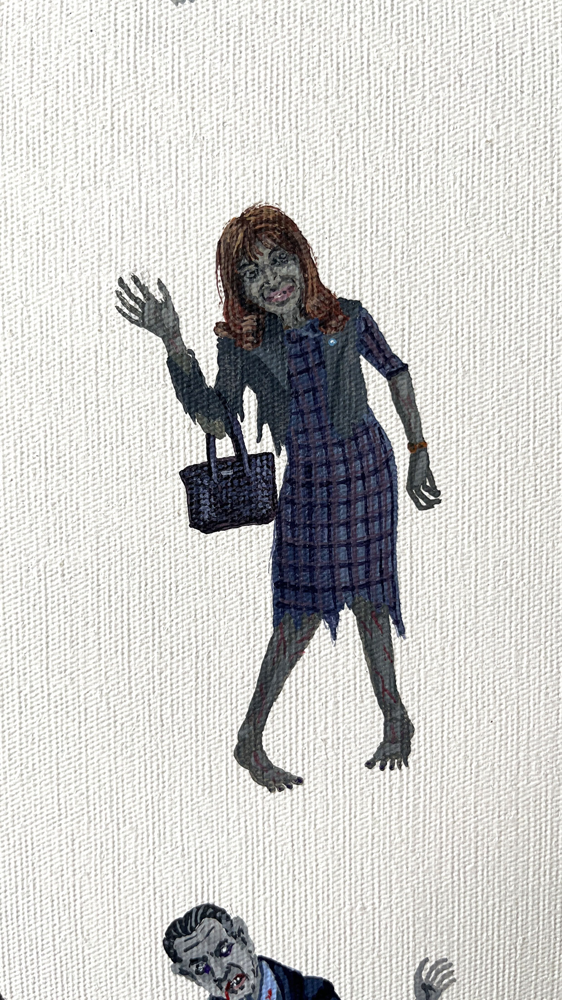
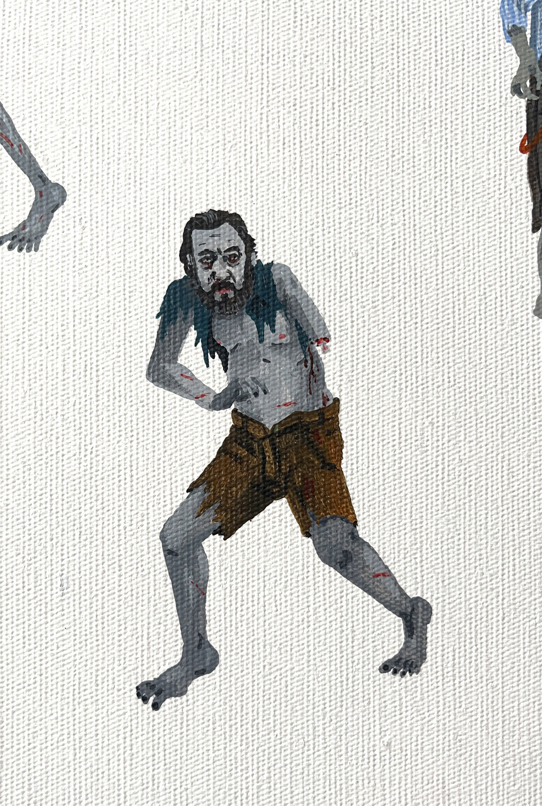
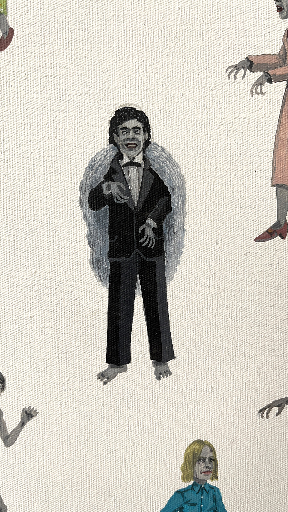
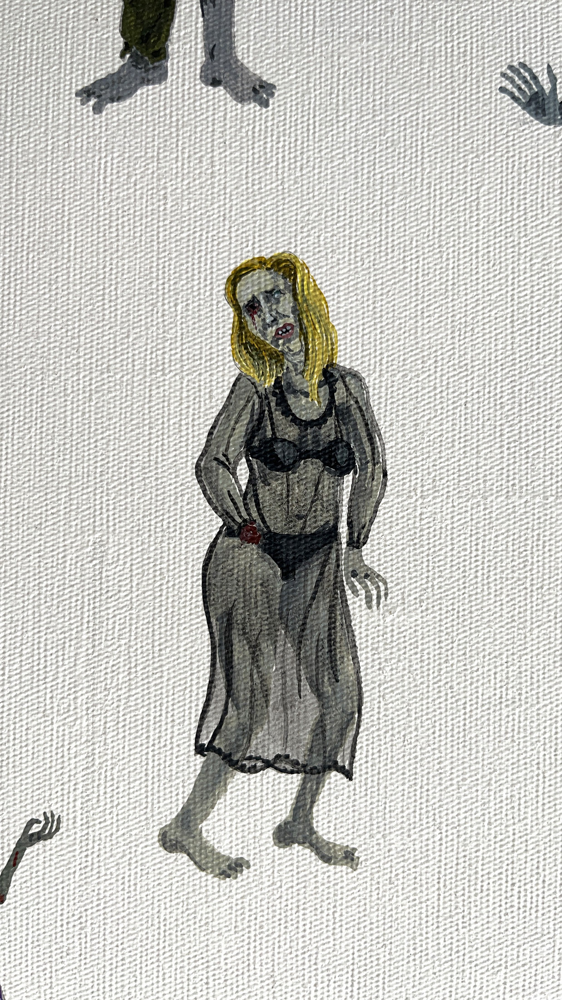
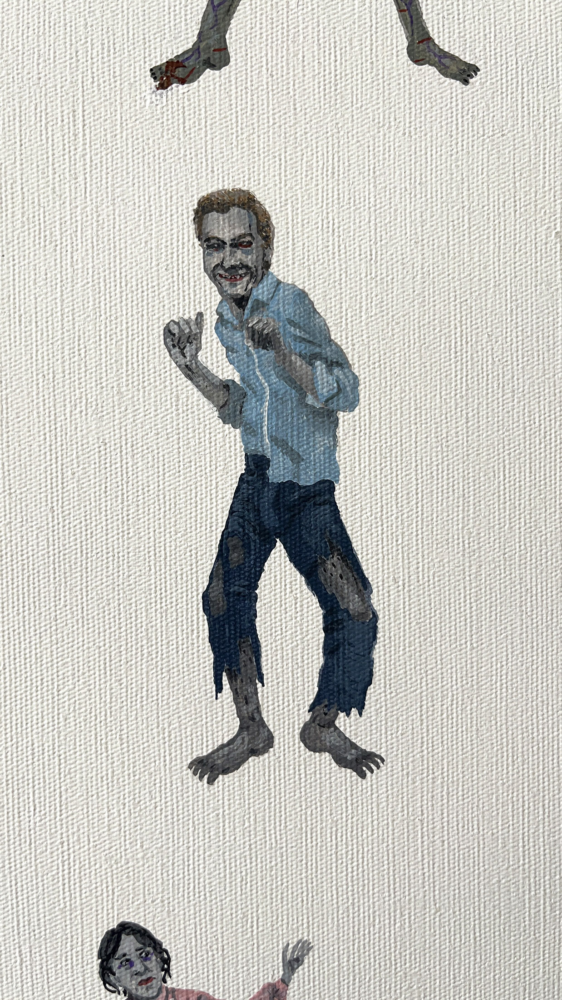
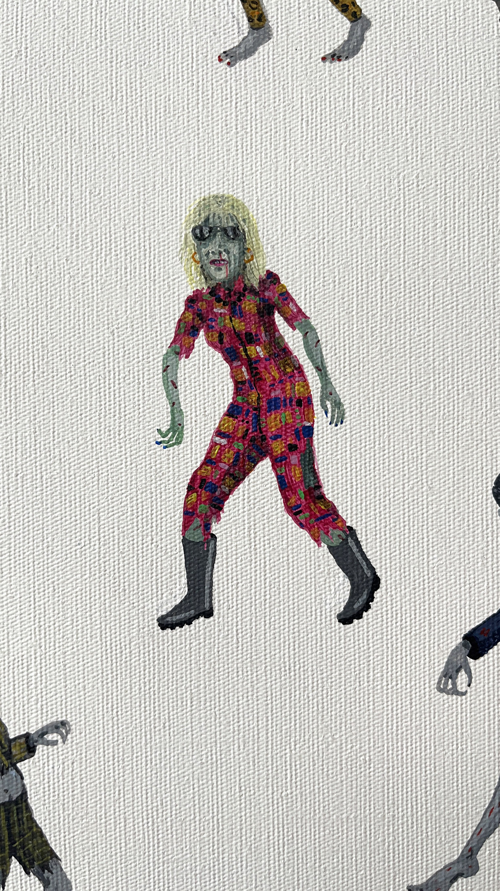
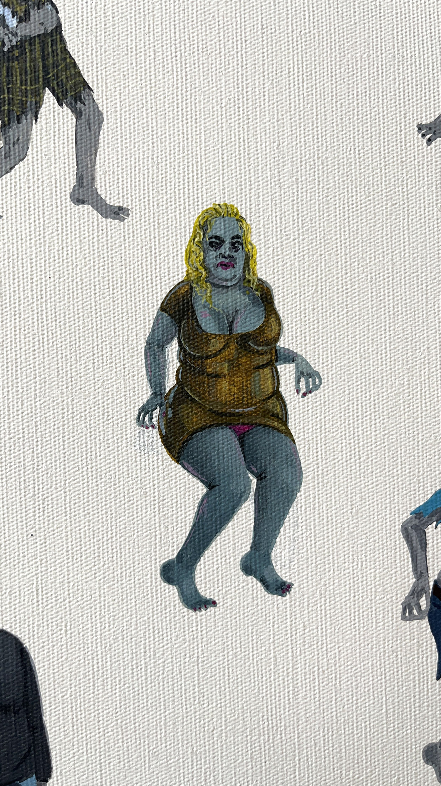

El Regreso del Ser Nacional
El Regreso del Ser Nacional es una obra pictórica que reúne un conjunto amplio de figuras reconocibles de la historia, la política, la cultura y los medios argentinos, organizadas como un inventario de representaciones.
El retrato deja de funcionar como imagen individual para convertirse en una estructura colectiva, donde las identidades se acumulan, se repiten y se tensionan en un mismo campo.
La obra no se presenta como un archivo cerrado, sino como una forma provisoria de ordenar un imaginario nacional en permanente disputa.









